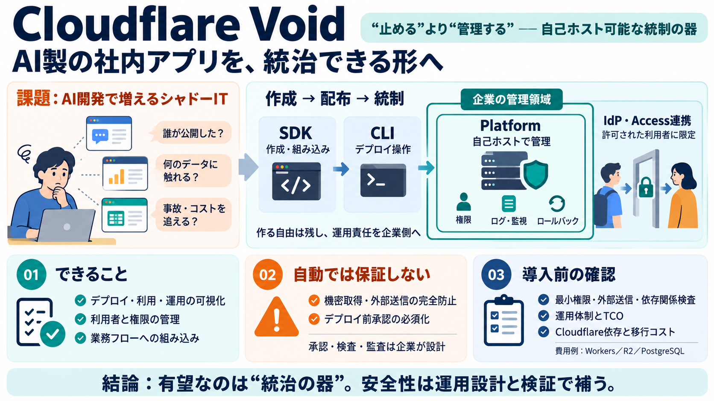

Cloudflare Acquires VoidZero to Build the Future of the AI-Native Web | Cloudflare
San Francisco, CA — June 4, 2026 — Cloudflare, Inc. (NYSE: NET), the leading connectivity cloud company, today announced…

San Francisco, CA — June 4, 2026 — Cloudflare, Inc. (NYSE: NET), the leading connectivity cloud company, today announced…
VoidZero iconVoidZero is joining Cloudflare VoidZeroVoidZero // announcements # VoidZero is Joining Cloudflare JUN 4…
UPDATED 18:23 EDT / JUNE 04 2026 ### Cloudflare acquires VoidZero, maker of the Vite JavaScript toolchain by Duncan Ri…
Longer term: We start the work on moving the Cloudflare CLI toward an experience built directly on top of Vite. Vite …
We’re excited to open-source three new products that bring server routing, typed data access, and Cloudflare deployment …